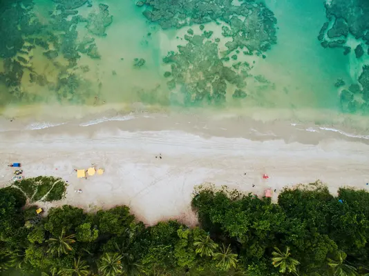

Grace Bay Beach - Ilhas Turcas e Caicos
Provavelmente você nunca ouviu falar das Ilhas Turks e Caicos, mas garantimos que vale a pena conhecer o pequeno arquipélago no Caribe. Afinal, uma de suas praias foi a eleita a melhor do mundo!
E não é a primeira vez que a praia de Grace Bay aparece no ranking das melhores praias do mundo. Afinal, ela tem tudo que a maioria dos turistas amam: águas quentes e translúcidas, areia branca e muita vida marinha.
A barreira de coral no Princess Alexandra Marine Park é um dos melhores pontos de mergulho da região. A maioria das hospedagens fica na ilha principal de Providenciales, mas também é possível encontrar opções em uma das outras 8 ilhas que também são habitadas.
Varadero Beach - Varadero, Cuba
Um dos principais diferenciais de Varadero é seu mar azul turquesa que, segundo os visitantes, é um dos mais lindos do mundo. Além dos resorts all-inclusive, a praia também tem estrutura para você curtir sem preocupações.
Para entrar no país é necessário passaporte válido, passagens de ida e volta, comprovantes de hospedagem, visto de turista e apólice de seguro viagem.
Turquoise Bay - Exmouth, Austrália
O terceiro lugar da lista fica na Austrália Ocidental, no Cape Range National Park na cidade de Exmouth. A “Baía Turquesa”, fica próxima ao recife de Ningaloo.
Ela é uma das melhores praias australianas para praticar snorkel, já que as águas são rasas, quentes e cheias de corais, tartarugas marinhas, arraias, golfinhos e estrelas do mar.
O melhor ponto de mergulho da segunda maior barreira de corais da Austrália fica na extremidade sul, só tenha atenção para não nadar para a parte de trás do recife Ningaloo, onde as ondas quebram.
A melhor época para conhecer a praia é durante o verão, entre dezembro e fevereiro. Durante o inverno, entre junho e agosto, as temperaturas ficam mais baixas e não será tão fácil curtir a praia.
Quarta Praia - Morro de São Paulo, Bahia, Brasil
A primeira praia brasileira aparece em quarto lugar! A Quarta Praia, em Morro de São Paulo, pertencente a Ilha de Tinharé na Bahia e fica a cerca de 2 horas de Salvador no percurso de catamarã.
A região é uma das mais lindas do Brasil, e tem praias para todos os gostos. A primeira praia tem mais ondas e é onde chega a tirolesa. A segunda praia é a mais badalada, cheia de restaurantes.
A terceira e a quarta praias são as mais isoladas. Na terceira partem os passeios de barco para Boipeba e Garapuá e a Quarta Praia é um verdadeiro paraíso para quem ama piscinas naturais.
Na maré baixa várias delas se formam e o cenário é lindo. Não há muita estrutura na quarta praia, o ideal é ir preparado para relaxar e ver poucas pessoas. Existem resorts e hotéis à beira-mar para quem quer curtir os dias de tranquilidade.
E se aguentar caminhar mais um pouco, não deixe de conhecer a mais desconhecida de todas: a quinta praia, ou praia do Encanto!
Eagle Beach - Palm/Eagle Beach, Aruba
Vizinha da badalada Palm Beach, Eagle Beach é tranquila e está fora da rota dos furacões do Caribe!
Isso significa que você pode visitar Aruba o ano inteiro para conferir as belíssimas praias da ilha holandesa. A ilha conhecida como “One Happy Island” ou “uma ilha feliz”, não exige visto dos brasileiros (apenas se fizer conexão nos Estados Unidos). Mas não esqueça da vacina contra a febre amarela, ela é obrigatória!
Além das lindas praias, outras atrações de Aruba são:
- Farol Califórnia que tem mais de 100 anos;
- Parque Nacional Arikok;
- Ruínas de Bushiribana;
- Cassinos;
- Capela Alto Vista;
- Centro de Oranjestad.
Radhanagar Beach - Havelock Island, Índia
Talvez a Índia não seja conhecida por ser um destino de praia, mas vamos te mostrar que o país vai te surpreender! O golfo de Bengala é a maior baía do mundo e lá existem mais de 500 ilhas repletas de lindas praias.
A praia de Radhanagar, na pequena ilha de Havelock pertencente às Ilhas de Andaman e Nicobar, é um refúgio remoto com areia macia, águas transparentes e um pôr do sol de tirar o fôlego.
Na região há grandes hotéis e resorts, mas o clima continua paradisíaco e tranquilo. Aproveite os meses entre novembro e fevereiro para conhecer as lindas praias indianas.
Evite os meses do verão indiano, entre junho e setembro, que além de excessivamente quentes são bastante chuvosos devido às monções. E não esqueça de solicitar o seu visto indiano para conhecer o país!
Baía do Sancho - Fernando de Noronha, Pernambuco, Brasil

A próxima participação do Brasil na lista é a Praia da Baía do Sancho, no arquipélago de Fernando de Noronha.
A praia pertencente ao estado de Pernambuco já foi escolhida várias vezes como a praia mais bonita do mundo. A areia fofa, águas cristalinas e abundante vida marinha só pode ser acessada de barco ou por uma escada íngreme no penhasco.
Mas garantimos que o percurso vale a pena! É um dos lugares mais cobiçados para praticar mergulho. O acesso a praia é controlado para preservar o local, e é necessário pagar uma taxa de R$ 75,00.